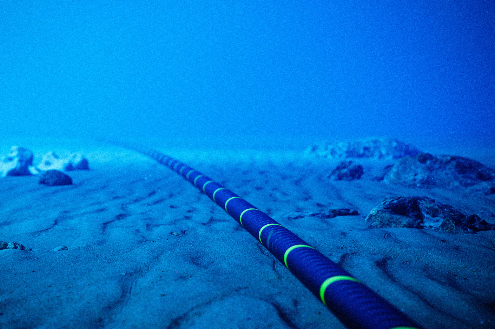

Kładzenie światłowodów pod wodą - jak?
Co to są kable morskie?
Kable morskie to podwodne światłowody, które przenoszą
~99% całego ruchu internetowego między kontynentami.
Są one bardzo ważne ponieważ dzięki nim, internet działa globalnie i szybko,
polega na nich także gospodarka świata np. banki.
Dlatego firmy takie jak Google lub Meta inwestują w budowlę swoich kabli.
Jak światłowód jest wykładany?
Najpierw bada się dno oceanu; unika się wulkanów, głębokich rowów,
miejsc z silnymi prądami czy intensywnym ruchem statków.
Statek płynie powoli i opuszcza kabel na dno oceanu.
Na dużych głębokościach kabel po prostu leży na dnie.
Blisko lądu kabel jest bardziej narażony na uszkodzenia (kotwice, sieci rybackie),
więc specjalny podwodny pług zakopuje go pod piaskiem lub mułem.
Co kilkadziesiąt–kilkaset kilometrów montuje się repeatery/wzmacniacze,
które wzmacniają sygnał świetlny.
Budowa światłowodu morskiego
Optical Fibers → Włókna światłowodowe
Silicon Gel → Żel silikonowy
Ultra-High Strength Steel Wires → Stalowe przewody o bardzo wysokiej wytrzymałości
Buffering Material (Plastic/Steel) → Materiał buforujący (plastik/stal)
Copper Sheath → Powłoka miedziana
Polyethylene Insulator → Izolacja polietylenowa
Nylon Yarn Bedding → Warstwa nylonowa (wypełnienie/ochrona)
Galvanized Armor Wires → Ocynkowane druty pancerne
Tar-Soaked Nylon Yarn → Nylon nasączony smołą